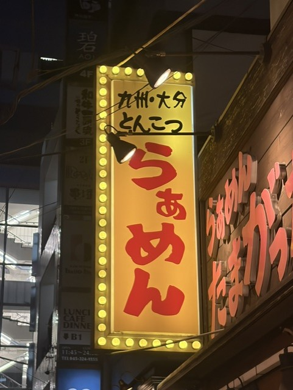
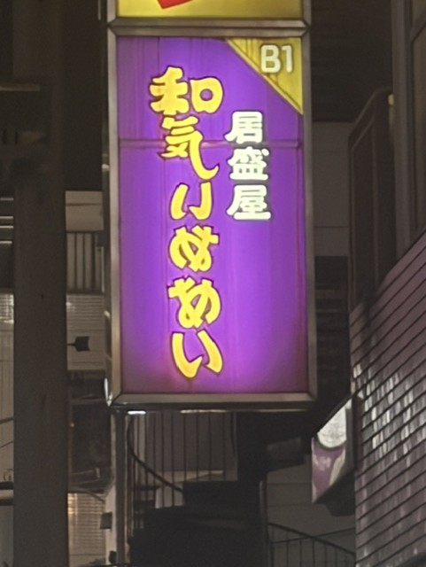
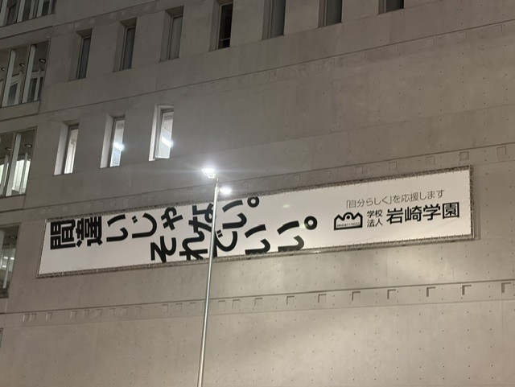

路上観察
撮影日：2026年10月13日
撮影場所：横浜駅周辺
撮影者： 小幡真裕
①「らぁめん」

普通に「ラーメン」ではなくひらがなで「らぁめん」と表記しているのが特徴的で独特な印象を受けた。
②居酒屋

文字が反転しているため、何と書かれているのか気になり、見る人の興味を引くデザインだと感じた。
「居酒屋」の文字も独特な形に変えられているが、不思議と読めてしまうのが面白い。
③学校

文字の向きが通常とは異なるため、違和感があり、思わず目を引かれる看板だと感じた。
何と書いてあるのか気になって読んでしまうため、文字の配置によって興味を引く工夫がされている。